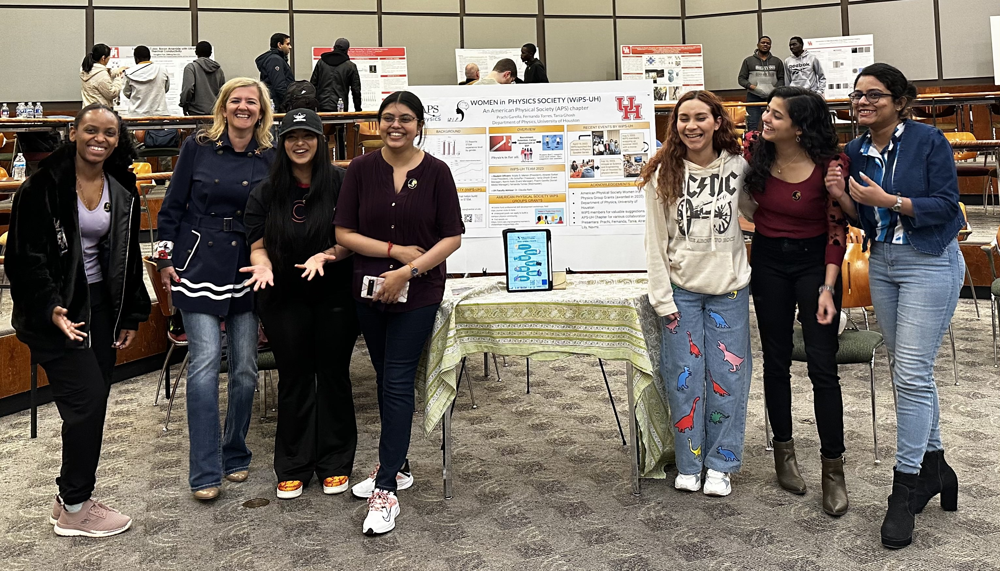

Empowering Women in STEM
I believe myself to be an advocate for women's rights in STEM and call myself a STEMinist. As a STEMinist I actively focus on bringing women from different parts of the world meet, and initiate an open dialogue on how to make those tables available for women where they are not invited. I believe that women with their unique understanding of the world and unbeatable perseverance can give a whole new direction to the world of science and technology. About the picture: this picture was taken on the Undergraduate research day where Women in Physics Society presented a poster about our aims and mission.
Beyond Portals
I Co-founded Beyond Portals, to promote and popularize research in fundamental sciences. We also support minorities in STEM and provide them with a platform to learn, grow and guide them to pursue a career in fields they are passionate about. According to my experiences I strongly feel that the education system of the world needs a major fix and that is what keeps me motivated towards building a community of people sharing revolutionay ideas and are equally passionate and willing to collectively build a platform that has the potential to transform education, academics, research as well as industry across the globe. We organize public talks, workshops and seminars online as well as offline. Our members are actively working on tapping into areas like social media, e-schooling etc. and are constantly coming up with new ideas and approaches to efficiently propagate our ideas.
- Open Problems in Theoretical Physics, Amity University, India.
- On the Foundations of Quantum Mechanics, Christ University, India.
- Gravitational Waves and Blackholes, Beyond Portals Head Quarters, India.
- General Relativity and its impact of Physics, Virtual If you would like to invite me for a Physics talk, write to me at physics@prachigarella.com.

Science Communication
I believe as a physicist it's extremely important to communicate science to the layman in hope of developing an intellectual society. I am actively trying to spread knowledge in every way possible. Here are a few public talks given by me over the years.